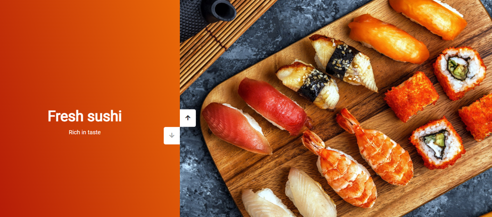

Проекты на JavaScript
Тех: HTML, CSS, JavaScript
В репозитории созданы мини-приложения, которые можно вставить в более сложные проекты
- Слайдер фотографий и цветов
- Генерация цветов, оставляющяя след за мышью
- Слайдер фотографий
- Рандомайзер цветов, которые можно заблокировать и сохранить
- Item drag and drop
- Небольшая игра, где можно набрать очки кликая на шарики различного размера и цвета
 GitHub
GitHub